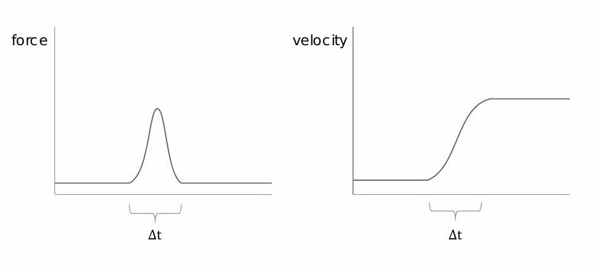
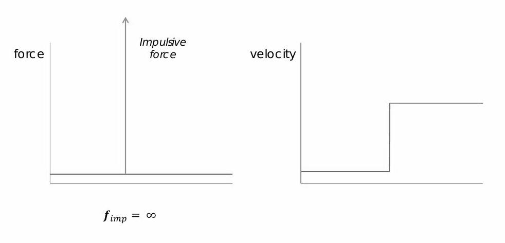
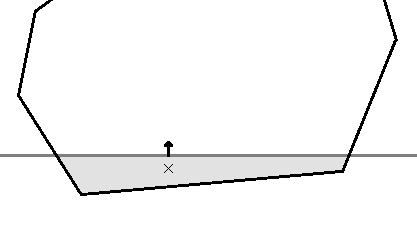

Implementing a small physics engine for a platformer game
The aim is to simulate the motion of a vessel, that evolves in an uniform gravity field and in a static world, in a Newtonian frame. I restrict this work on a 2D space, even if it stays valid in 3D with some adaptations.
After the equation of motion begin recalled, the impulse response from a single contact is resolved. A simple model is proposed, from which some limitations are discussed. Then, the penetration resolution is determined. Finally, the model is extended such as the vessel has feet with dampers.
1. Equation of motion
We define the state of a rigid body with the position of its center of inertia ( called \(\vec{C}\) ) and its rotation ( called \(\Omega\) ).
Both parameters define a local frame attached to the rigid body.
In the following, the velocity of the center of inertia is called \(\vec{v}\), while the rotational velocity is noted \(\omega\).
The equation of motion is:
$$ m \dot{\vec{v}} = m \vec{g} + \sum \vec{F} $$
$$ I \dot{\omega} = \sum \vec{p} \times \vec{F} $$
where
- \(m\) is the mass of the body,
- \(I\) its rotational inertia,
- \(\vec{g}\) the gravity action,
- \(\vec{F}\) a force applied at the point \(P = C + \vec{p}\) of the body.
With only the gravity, the motion can be integrated with the exact integration scheme:
void simulate_1(float dt)
{
// Motion integration
bodyPos += dt * bodyVel;
bodyRot += dt * bodyRotVel;
// Gravity
bodyPos += 0.5 * dt * dt * gravity;
bodyVel += gravity * dt;
// [...]
}
2. Computing a contact response
When the body hits a fixed obstacle, a reaction force prevents penetrations. With the rigid body approximation, the velocity of the body has a gap at the hit time. Consequently, the contact response is defined by a velocity gap.
|  |  |
| Soft reaction force, with a soft body. | Impulse, with a rigid-body. |
During the contact, the contact action is predominant compared with other actions, such as the gravity. Therefore, I use the approximation of a single force, with a constant direction. From the integration of the equation of motion, I obtain:
$$ m \vec{\delta v} = \int_{\delta t} { \vec{F} } $$ $$ I \delta \omega = \vec{p} \times \int_{\delta t} { \vec{F} } $$ This yields to: $$ \delta \omega = \frac{m}{I} \vec{p} \times \vec{\delta v} $$ We can remark that the variation of the velocity is parallel with the overall force direction. The goal is to compute the variation of both the velocity \(\vec{\delta v}\) and the angular-velocity \(\delta \omega\). The velocity delta of the contact point \(P\) verifies two relations. The first is the rigid body cinematic relation, $$ \vec{\delta v_P} = \vec{\delta v} - \vec{p} \times \vec{\delta \omega} $$ and the second is ruled by the contact properties, that only depends on the known velocity of the contact point before the hit: $$ \vec{\delta v_P} = - v^{\star}_r \vec{n} - v^{\star}_f \vec{t} $$ where \( \vec{n} \) is the normal of the surface of the obstacle, \( \vec{t} \) is a tangent to this surface, and \( v^{\star}_r \), \( v^{\star}_f \) respectively the rebound velocity and friction velocity. After some computations, I obtain: $$ (\delta \vec{v} \cdot \vec{n}) \left( 1 - \frac{m}{I} \vec{p} \times ( \vec{p} \times \vec{n} ) \cdot \vec{n} \right) = - v^{\star}_r $$ $$ (\delta \vec{v} \cdot \vec{t}) \left( 1 - \frac{m}{I} \vec{p} \times ( \vec{p} \times \vec{t} ) \cdot \vec{t} \right) = - v^{\star}_f $$
The pseudo-code:
const float moverI = 0.20f; // (depends on the object geometry) void simulate_2(float dt) { // [...] Motion integration + Gravity // Contact dvel = vec2(0.f, 0.f); drotvel = 0.f; for (auto contact in compute_contacts()) { // Rebound const float reboundCoef = 1.2f; // (depends on the surface's type) float alpha = cnt.normal.x * ( cnt.pt.y*cnt.pt.x*cnt.normal.y - cnt.pt.y*cnt.pt.y*cnt.normal.x) + cnt.normal.y * (-cnt.pt.x*cnt.pt.x*cnt.normal.y + cnt.pt.x*cnt.pt.y*cnt.normal.x); alpha = 1.f - moverI * alpha; dvel.x -= dot(cnt.vit,cnt.normal) * reboundCoef / alpha * cnt.normal.x; dvel.y -= dot(cnt.vit,cnt.normal) * reboundCoef / alpha * cnt.normal.y; const float fmoment = cnt.pt.x * cnt.normal.y - cnt.pt.y * cnt.normal.x; drotvel -= moverI * dot(cnt.vit,cnt.normal) * reboundCoef / alpha * fmoment; // Friction const float frictionCoef = 0.1f; // (depends on the surface's type) float alphaT = cnt.tangent.x * ( cnt.pt.y*cnt.pt.x*cnt.tangent.y - cnt.pt.y*cnt.pt.y*cnt.tangent.x) + cnt.tangent.y * (-cnt.pt.x*cnt.pt.x*cnt.tangent.y + cnt.pt.x*cnt.pt.y*cnt.tangent.x); alphaT = 1.f - moverI * alphaT; dvel.x -= dot(cnt.vit,cnt.tangent) * frictionCoef / alphaT * cnt.tangent.x; dvel.y -= dot(cnt.vit,cnt.tangent) * frictionCoef / alphaT * cnt.tangent.y; const float fmomentT = (cnt.pt.x * cnt.tangent.y - cnt.pt.y * cnt.tangent.x); drotvel -= moverI * dot(cnt.vit,cnt.tangent) * frictionCoef / alphaT * fmomentT; } bodyVel += dvel; bodyRotVel += drotvel; }
Results and discussion:
This method is producing good results, while there is one single simultaneous contact. It will produce over-reaction with multiple simultaneous contacts. Let's take an example of a body with two feet that will rebound on its two feet. For both feet, the contact algorithm will compute a velocity, from the same configuration. Let denote \( \vec{p_1} = (-L, h) \) and \( \vec{p_2} = (L, h) \) with \( \vec{n} = (0, 1) \). This leads to: $$ \delta \vec{v} \cdot \vec{n} = \frac{-2}{ 1 + \frac{m}{I} L^2 } \vec{v_r} $$ This is over-reaction when the velocity gab ( \( \delta \vec{v} \) ) is higher than the rebound velocity ( \( \vec{v_r} \) ). The good news is that the condition only depends on the geometry and mass repartition.
| Rebound with one contact point with low friction. | Over-reaction with two contact points. |
3. Resolution of the penetration
There are 2 methods to compute the penetration.
- The first method is to compute the exact time when the body enters in contact, and to split the time-frame simulation in two parts, before and after the contact.
- The second method is to work with the penetration at the end of the time-frame, so basically after at a little while of the contact.
I decided to go with the second method, because it allows to easily work with multiple contacts and its stability when the body is on the ground.
However, the drawbacks are that the penetration resolution should be precise, the penetration may fail to be resolved if the time-step or the velocity is too high, and the body should be moved out-of-penetration at the end.
To resolve the penetration, I compute the intersection of the body area with the obstacle area.
I use a conjecture to compute the virtual contact-point in which the resultant contact force is applied from:
the virtual contact-point is at the barycenter of the intersecting area.
This conjecture is similar with the Archimedes force if we consider the obstacle made in water.
Another similarity is to average the elastic-force on the intersecting area if all of its matter is displaced on the obstacle surface.
After this, the body must be moved to cancel the penetration.
I choose the simplest way: translate the body along the obstacle normal vector, such that it no longer penetrates the obstacle.
The pseudo-code:
void simulate_3(float dt)
{
// [...] Motion integration + Gravity
// Contact
dpos = vec2(0.f, 0.f);
for (auto contact in compute_contacts())
{
// [...] Rebound
// [...] Friction
// Compute variation of displacement - only translation
dpos.x += cnt.penet * cnt.normal.x;
dpos.y += cnt.penet * cnt.normal.y;
}
bodyPos += dpos;
}
Results and discussion:
Like with the velocity compute, the displacement method will produce over-displacement when there are multiple contacts. But because the displacements are likely not noticeable, it will still produce good results. However, the rotational velocity and velocity-gap are ignored. Then the scheme tends to produce an unwanted forward motion when the body has contact-points that last several time frames.
I'm still working to improve the model, by properly taking account of the rotational velocity.
4. Faking the landing feet

Adding landing feet with dampers greatly improves the feeling of the contact response.
The coupling between the vessel and the feet is not obvious to determine.
However, I use a conjectured method to keep it simple and compatible with the kinetic relations established above.
The principle is to use what I call a "transmittance" factor between the foot and the body.
When the foot's spring is no stressed,
the contact force is completely received by the foot, and the body does not see any contact force.
On the opposite, the contact force is fully transmitted to the body when the foot reach its maximal displacement.
Additionally, each foot has its own motion equation, in which I ignore the inertia forces from the body motion.
The pseudo-code:
Not yet! I'm still working to improve the model.
Results and discussion:
Despite some jitters, the results are good enough.
| Rebound with horizontal velocity | Rebound with vertical motion only |